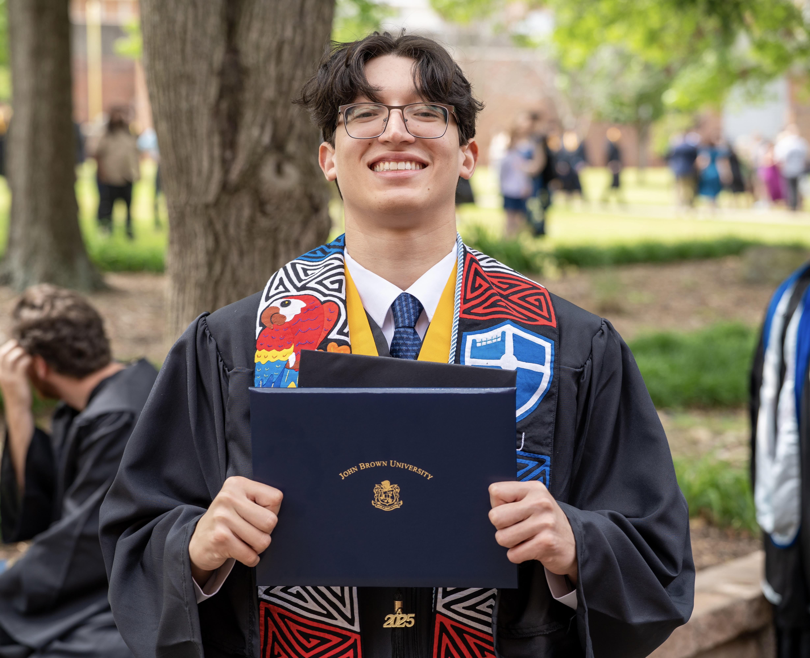

Roberto Aguero

I am a MSc. student at Fordham University in New York City. I'm currently a Summer Research Associate at the Flatiron Institute under the Center for Computational Neuroscience working on connectomics. I am also working with Dr. Yiyin Zhou on light microscopy-based connectomics of Drosophila.
My research sits at the intersection of computational neuroscience and artificial intelligence. I am motivated by the conviction that the standard model of the neuron remains an incomplete account of biological computation—with consequences for how we build and understand artificial systems—and that boundary is where I work.
Much of my recent work has focused on multi-modal models: reverse-engineering the internal representations and circuits that give rise to their behavior. Feel free to reach out if you would like to learn more, or explore collaborations.